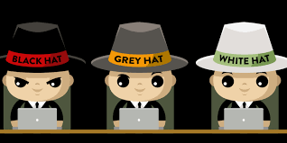

Tipos de Hackers
Hay muchos tipos de hacker y con diferentes funciones o trabajos dentro de esta comunidad.
- Hakers Black Hat o de Sombrero Negro:Llamados ciberdelicuentes o cibercliminales, estos hackers utilizan sus conocimientos para cometer delitos y obtener un beneficio propoio.
- Hackers White Hat o de Sombrero Blanco:Conocidos como Hakers esticos, se dedican a la investigacion de vulnurebilidades para mejoras la seguridad de los sistemas.
- Hackers Gray Hat o de Sombrero Gris:Estos hackers puede pasar de BlackHat a WhiteHat dependiendo del momento, asi como pueden trabajar para ayudar, como tambien pueden cometer delitos.
- NewBies:Tambien conocido como Script Kiddie, que son usuarios que no cuentan con amplios conocimientos y se dedican a hacer daños por curiosidad, utilizando herramientas de hackers.
- Hacktvista:Atacan sistemas con fines sociopoliticos, a instituciones gubernamentales o empresas a manera de protesta.
